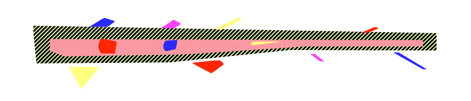
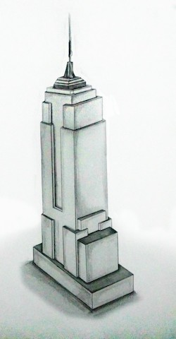
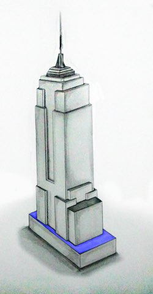
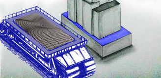
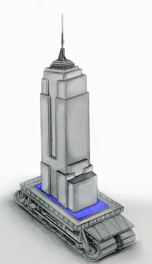
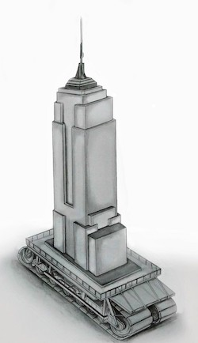

-
- Introduce an abstraction to methodically chomp away at that time consuming non-functional change
- Start with a single most depended on and least depending component
- To not jeopardize anyone else's throughput, work in a place in the codebase that is separate to the existing code
- Methodically complete the work, temporarily duplicating tens or hundreds of components
- Go live in a 'dark deployment' mode part complete as many times as needed
- Scale up your CI infrastructure to guard old and new implementations
- When ready, switch over in production (a toggle flip to end 'dark deployment' mode)
- Lastly, delete old implementations and the abstraction itself (essential follow up work)

Branch By Abstraction?
Yes, by abstraction instead of by branching in source control. And no, that doesn't mean sprinkle conditionals into your source code. It means to use an abstraction concept that's idiomatic for the programming language you are using.
Context: Some types of non-functional change take so long to code that someone suggests doing the work on a branch and merging back later. These will be the types of changes that are going to impede the concurrent development of normal functional deliverables. Where the non-functional changes impact many parts of the codebase, there is a risk of repeatedly breaking the build. Where there is a risk of breaking the build, there is a "do it on a branch" suggestion.
Another factor driving that suggestion is when there is a mismatch between the release cadence and the time needed to complete the work. In other words, change can take many weeks or months and there will be releases to production before the completion of the work in question.
The new branch idea would be OK if the resulting merge back could be instantaneous and guaranteed to be a pain-free merge. That is impossible though for any higher throughput development team that is also doing regular refactorings as they go. Note too that executives often express their displeasure with nonfunctional work taking longer than promised by canceling it.
Branch by abstraction is a methodical procedure which has some steps:
That last is the characterizing difference between the methodical branch by abstraction procedure and the ordinary and lasting abstractions in your codebase. The removal of the abstraction (and old implementation) is the equivalent to the merge back from the branch that you've now avoided.
Here are the steps of the methodical Branch by Abstraction procedure illustrated using a series of changes to the construction of the Empire State Building if it were made of software not steel and concrete





Thanks to Arsalan33 on Fiverr for the "Empire Crawler" artwork.
Thanks also to me for previously writing "Building Software is Nothing Like Building Buildings" blog entry that featured the Empire State Building.